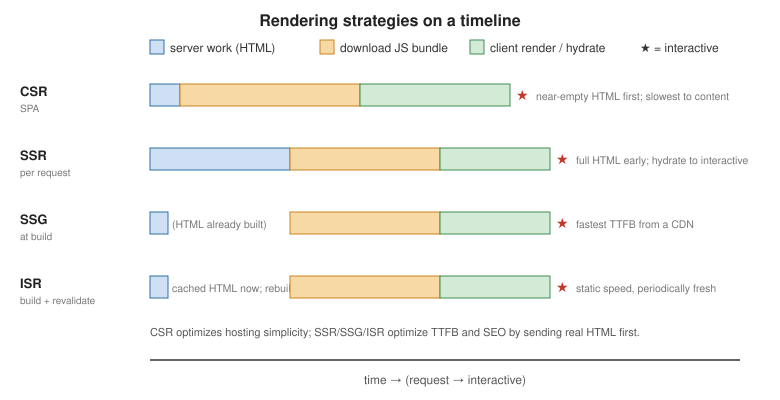

Server Rendering, SSG and React Server Components
|
This content was generated with the assistance of AI and should be verified against the official documentation before being relied on in production. |
Where the initial HTML is produced — in the browser, on a server per request, or ahead of time at build — shapes an app’s time-to-first-byte, SEO, and hosting model. This page is a brief, example-led tour; a framework (Next.js, React Router) implements these for you. For how Next.js decides between them, see Next.js Rendering Fundamentals.
CSR vs. SSR vs. SSG vs. ISR
| Strategy | How | Optimizes for |
|---|---|---|
CSR (client-side) |
Server sends a near-empty HTML shell + JS; the browser renders everything. |
Simple static hosting; highly dynamic, auth-gated apps. Poor SEO, slow first paint. |
SSR (server-side) |
Server renders full HTML per request, browser hydrates it. |
SEO + fast first contentful paint for dynamic, per-user pages. Needs a running server. |
SSG (static generation) |
HTML rendered once at build time, served from a CDN. |
Fastest TTFB, cheapest hosting. Content that changes rarely (docs, marketing, blog). |
ISR (incremental) |
SSG + background revalidation after a TTL or on demand. |
Static speed with periodically fresh content (product catalog, news). |

Next.js treats these as per-route outcomes rather than global choices; see Next.js Server-Side Rendering, Static Site Generation and Incremental Static Regeneration.
Hydration
Server-rendered HTML is inert. Hydration attaches React’s event listeners and state to that existing markup instead of recreating it.
import { hydrateRoot } from 'react-dom/client';
import App from './App';
hydrateRoot(document.getElementById('root'), <App />);The tree React renders on the client must match the server HTML. Common hydration mismatches: rendering
Date.now() / Math.random() / window during render, locale-dependent formatting, and invalid nesting
(<div> inside <p>). See
hydrateRoot.
-
Selective hydration — content wrapped in
<Suspense>hydrates as a separate unit, so React does not have to wait for a slow part’s code or data before hydrating the rest of the page. A boundary that streamed in later hydrates when it arrives. -
suppressHydrationWarningis an escape hatch with limits — it silences the mismatch warning for one element’s attributes or text content only (one level deep), and React does not patch the mismatched text. Use it for unavoidable differences such as a timestamp, not to hide real bugs. SeehydrateRoot. -
use(browser())(React 19.3) — a Client Component can calluse(browser())fromreact-domto opt out of server rendering. During server rendering it stops the component and leaves the nearest<Suspense>fallback in the HTML; in the browser it returnsundefinedand the component renders normally. It must be inside a<Suspense>boundary, and it replacestypeof windowchecks and amountedstate set in an Effect. Seebrowserand the React 19.3 post.
'use client';
import { Suspense, use } from 'react';
import { browser } from 'react-dom';
function TimeZone() {
use(browser('Needs the browser time zone.')); // server: Suspense fallback; browser: renders
return <p>{Intl.DateTimeFormat().resolvedOptions().timeZone}</p>;
}
export default function Zone() {
return <Suspense fallback="Loading…"><TimeZone /></Suspense>;
}For the full treatment — the hydration timeline, the catalogue of mismatch causes, measuring hydration cost — see Next.js Hydration.
react-dom/server
-
renderToPipeableStream— Node streams; the standard SSR entry point. Streams HTML as it renders and supports<Suspense>. -
renderToReadableStream— the same for Web Streams (edge runtimes, Deno, workers). -
renderToString/renderToStaticMarkup— synchronous, no streaming; legacy or for tiny cases (emails, static fragments). -
prerender/prerenderToNodeStream— render to a fully-formed static HTML string for SSG. -
resume/resumeToPipeableStream,resumeAndPrerender(React 19.2) — continue a render thatprerenderpostponed; see Partial Prerendering.
With streaming SSR, content wrapped in <Suspense> is sent as a fallback first, then the real markup is
streamed in and swapped when its data resolves — the user sees the shell immediately. See
Server React APIs. Since React 19.2, the server batches the
reveal of Suspense boundaries for a short time so more content appears together, matching client rendering; see
the React 19.2 post.
Streaming SSR step by step
The running example is the product page of the shop: a heading and an "Add to cart" button that are available
immediately, and a list of reviews that comes from a slower service. The component reads the reviews with
use inside its own <Suspense> boundary, so the slow part does not block the fast part:
import { Suspense, use, useState } from 'react';
export interface Review { author: string; text: string }
export function Reviews({ promise }: { promise: Promise<Review[]> }) {
const reviews = use(promise);
return (
<ul>
{reviews.map((r) => <li key={r.author}>{r.author}: {r.text}</li>)}
</ul>
);
}
function AddToCart() {
const [n, setN] = useState(0);
return <button onClick={() => setN(n + 1)}>Add to cart ({n})</button>;
}
export function ProductPage({ name, reviews }: { name: string; reviews: Promise<Review[]> }) {
return (
<article>
<h1>{name}</h1>
<AddToCart />
<Suspense fallback={<p>Loading reviews…</p>}>
<Reviews promise={reviews} />
</Suspense>
</article>
);
}Rendering it with renderToPipeableStream and collecting what is written shows the mechanism. The first chunk
is the shell, with the Suspense fallback and an empty placeholder (<template id="B:0">) marking where the
real content will go; a second chunk arrives when the reviews resolve:
import { renderToPipeableStream } from 'react-dom/server';
import { Writable } from 'node:stream';
export function renderStreamed(reviews: Promise<Review[]>) {
return new Promise<{ chunks: string[]; errors: string[] }>((resolve) => {
const chunks: string[] = [];
const errors: string[] = [];
const sink = new Writable({
write(chunk, _enc, cb) { chunks.push(chunk.toString()); cb(); },
final(cb) { cb(); resolve({ chunks, errors }); },
});
const { pipe } = renderToPipeableStream(<ProductPage name="Widget" reviews={reviews} />, {
onShellReady() { pipe(sink); }, // the shell (everything outside Suspense) is ready
onShellError(e) { errors.push(`shell: ${(e as Error).message}`); resolve({ chunks, errors }); },
onError(e) { errors.push((e as Error).message); }, // errors inside a boundary: the client retries
});
});
}Output of a real run (the second chunk is abbreviated; the long inline script that performs the swap is elided):
<!-- chunk 0: the shell, sent as soon as onShellReady fires -->
<article><h1>Widget</h1><button>Add to cart (<!-- -->0<!-- -->)</button><!--$?--><template id="B:0"></template><p>Loading reviews…</p><!--/$--></article>
<!-- chunk 1: sent ~30 ms later, when the reviews promise resolved -->
<div hidden id="S:0"><ul><li>Ana<!-- -->: <!-- -->Great</li></ul></div><script>$RB=[];$RV=function(a){ ... }</script>The <!--$?--> comment marks a boundary that is still pending. The second chunk carries the finished markup in
a hidden <div id="S:0"> plus a small script that moves it into place, replacing the fallback, without any
React code on the client. If you pass renderToString the same tree it cannot wait: it fails for the
suspended boundary and emits a marker that tells the client to render that part itself (the <!--$!-->
comment), so use the streaming APIs whenever the tree can suspend.
A streaming Node server
renderToPipeableStream returns pipe and abort. The callbacks decide when to start sending and what
status code to use, which is the main reason to prefer it to a single res.send(renderToString(...)):
import express from 'express';
import { renderToPipeableStream } from 'react-dom/server';
import { ProductPage, type Review } from './App';
const app = express();
const loadReviews = (id: string) =>
new Promise<Review[]>((resolve) => setTimeout(() => resolve([{ author: 'Ana', text: `Great ${id}` }]), 50));
app.get('/products/:id', (req, res) => {
let didError = false;
const { pipe, abort } = renderToPipeableStream(
<ProductPage name={`Product ${req.params.id}`} reviews={loadReviews(req.params.id)} />,
{
bootstrapModules: ['/assets/client.js'], // the hydrateRoot entry produced by your bundler
onShellReady() {
res.statusCode = didError ? 500 : 200;
res.setHeader('Content-Type', 'text/html; charset=utf-8');
pipe(res); // start streaming as soon as the shell is ready
},
onShellError() {
res.statusCode = 500;
res.send('<h1>Something went wrong</h1>'); // nothing was sent yet, so a plain 500 page is fine
},
onError(error) {
didError = true;
console.error(error); // errors inside <Suspense> are retried on the client
},
},
);
setTimeout(() => abort(), 10_000); // never let a slow dependency hold the response forever
});
app.listen(3000);Requesting /products/7 from this server answers 200 text/html and the body already contains the heading,
the button and the streamed Great 7 review. The three callbacks have different jobs:
-
onShellReadyfires when everything outside the Suspense boundaries has rendered. Once you start piping, the status code and headers are fixed, so decide them here. -
onShellErrorfires when the shell itself failed. Nothing has been sent, so you can still reply with a proper error page and a500. -
onErrorfires for any error, including those inside a Suspense boundary. The boundary’s fallback stays in the HTML and the client retries rendering it, so the page is degraded rather than broken; log the error here.
bootstrapModules (or bootstrapScripts) adds the script tags that load the client bundle, which calls
hydrateRoot. Crawlers that do not wait for streamed content still receive the shell, so put what must be
indexed outside of slow Suspense boundaries, or send the response from onAllReady instead of onShellReady (render everything before sending) for bot
user agents.
Hydrating the result
The client bundle attaches to the server markup with hydrateRoot. React walks the existing DOM, matching it
against what the components render; if the two agree it adopts the nodes and only adds event handlers and
state. In a test this is observable: put the server HTML into a container, hydrate it, and check that the very
same <button> element is still in the document and works:
test('hydrateRoot attaches to server markup without recreating it', async () => {
const { chunks } = await renderStreamed(Promise.resolve([]));
const html = chunks[0].replace(/<script>.*<\/script>/, ''); // drop the streaming helper script
const container = document.createElement('div');
document.body.appendChild(container);
container.innerHTML = html;
const before = container.querySelector('button');
await act(async () => {
hydrateRoot(container, <ProductPage name="Widget" reviews={Promise.resolve([])} />);
});
expect(container.querySelector('button')).toBe(before); // same DOM node: it was adopted, not replaced
await userEvent.click(screen.getByRole('button'));
expect(screen.getByRole('button')).toHaveTextContent('Add to cart (1)');
});When the client output differs from the server HTML, React reports a recoverable error and falls back to
client rendering for the affected part. The onRecoverableError option of hydrateRoot receives these, which
is the hook for sending them to your error tracker:
hydrateRoot(container, <App />, {
onRecoverableError: (error) => reportToTracker(error), // hydration mismatches arrive here
});Writing components that hydrate cleanly
Most mismatches come from reading something during render that differs between server and browser. Three replacements cover the common cases:
-
Ids. Use
useIdinstead ofMath.random()or a counter. It returns the same value on the server and in the browser. -
Browser-only values such as
navigator.onLineormatchMedia. Read them withuseSyncExternalStoreand give it a server snapshot, the third argument, which is used on the server and during hydration so both sides render the same thing; React then re-renders with the real value after hydration. -
Anything else that only exists in the browser (the time zone,
localStorage). Render a placeholder first and fill it in an Effect, or useuse(browser())from the section above.
import { useId, useSyncExternalStore } from 'react';
const subscribe = (cb: () => void) => {
window.addEventListener('online', cb);
window.addEventListener('offline', cb);
return () => { window.removeEventListener('online', cb); window.removeEventListener('offline', cb); };
};
export function OnlineBadge() {
const online = useSyncExternalStore(subscribe, () => navigator.onLine, () => true);
return <p>{online ? 'Online' : 'Offline'}</p>;
}
export function Field({ label }: { label: string }) {
const id = useId(); // identical on server and client, unlike Math.random()
return (<><label htmlFor={id}>{label}</label><input id={id} /></>);
}Rendering both components with renderToString on a server without window works, because the server never
calls subscribe and uses the server snapshot (<p>Online</p>), and the <label for> and <input id> agree.
Partial Prerendering and the React prerender/resume APIs
React 19.2 added the building blocks for Partial Prerendering: call prerender with an AbortController
to render the static part of the tree ahead of time, which returns the HTML prelude and a postponed state;
serve the prelude from a CDN, and later call resume (or resumeToPipeableStream) with the postponed state to
stream in the dynamic content. resumeAndPrerender resumes to static HTML instead. See
prerender and
resume. Next.js builds Partial Prerendering on these
APIs with Cache Components; see
Partial Prerendering and Cache Components.
Caching and revalidation in frameworks
React itself caches nothing across requests; the framework does. A framework decides which rendered output or fetched data is reused and when it is refreshed, by time or on demand after a mutation. In Next.js these layers and the revalidation functions are described in Caching and Incremental Static Regeneration.
Static export
When every route can be rendered at build time, the output can be plain files served by any static host, with no
Node.js server. In Next.js this is output: 'export'; the trade-offs (no request-time features) are in
Static Site Generation and
Deployment and Self-Hosting.
React Server Components and Server Functions
Server Components render only on the server: their code and data-layer dependencies never reach the
browser bundle. Client Components (marked 'use client' at the top of the file) are the interactive
islands that hydrate. Server Functions (marked 'use server') are callable from the client and run on the
server — the mechanism behind Actions.
// ProductPage.jsx — a Server Component (no directive needed in an RSC framework)
import db from './db';
import AddToCart from './AddToCart'; // a Client Component
export default async function ProductPage({ id }) {
const product = await db.product.find(id); // runs on the server
return (
<article>
<h1>{product.name}</h1>
<p>{product.price}</p>
<AddToCart productId={product.id} /> {/* interactive island */}
</article>
);
}// AddToCart.jsx
'use client';
import { useState } from 'react';
export default function AddToCart({ productId }) {
const [added, setAdded] = useState(false);
return <button onClick={() => setAdded(true)}>{added ? 'Added' : 'Add to cart'}</button>;
}Next.js (App Router) is the reference implementation — see nextjs.org/docs/app
and, in this reference, Next.js Server and Client Components.
React 19 also hoists document metadata (<title>, <meta>, <link>) rendered anywhere into <head>, and
adds resource-preloading APIs (preload, preinit, prefetchDNS, preconnect). References:
Server Components,
'use client',
'use server'.
Worked example A — SEO-friendly e-commerce
Goal: product pages must return full HTML (name, description, price, JSON-LD) on the first response so Googlebot indexes them, while volatile pieces (live stock, "customers also bought", reviews) load client-side afterward.
This example uses Next.js conventions: a file at app/products/[id]/page.jsx becomes the route
/products/:id, and its generateMetadata export produces the <title> and description in the server HTML. In
Next.js 15 and later params is a Promise, so it must be awaited (const { id } = await params); reading
params.id synchronously is no longer valid. See
Dynamic Routes and Route Groups and
Metadata and SEO.
// app/products/[id]/page.jsx — Server Component: indexable HTML on first byte
import db from '@/lib/db';
import LiveStock from './LiveStock';
import Recommendations from './Recommendations';
export async function generateMetadata({ params }) {
const { id } = await params; // params is a Promise
const p = await db.product.find(id);
return { title: p.name, description: p.summary };
}
export default async function Page({ params }) {
const { id } = await params;
const p = await db.product.find(id); // rendered on the server
return (
<article>
<script type="application/ld+json" dangerouslySetInnerHTML={{
// escape "<" as \u003c so a product name containing </script> cannot close the tag
__html: JSON.stringify({
'@context': 'https://schema.org', '@type': 'Product',
name: p.name, description: p.summary, offers: { '@type': 'Offer', price: p.price },
}).replace(/</g, '\\u003c'),
}} />
<h1>{p.name}</h1>
<p>{p.summary}</p>
<p className="price">{p.price}</p>
<LiveStock sku={p.sku} /> {/* 'use client' — AJAX after hydration */}
<Recommendations productId={p.id} /> {/* 'use client' — AJAX after hydration */}
</article>
);
}In a TypeScript project, type it as { params }: { params: Promise<{ id: string }> }.
dangerouslySetInnerHTML does no escaping, and JSON.stringify leaves < as is, so a product name such as
</script><script>alert(1)</script> would close the JSON-LD script and run. Replacing < with its Unicode escape
\u003c keeps the JSON valid and makes </script> impossible; see
Next.js: JSON-LD and
Data Security and CSP.
// app/products/[id]/LiveStock.jsx
'use client';
import { useQuery } from '@tanstack/react-query';
export default function LiveStock({ sku }) {
const { data } = useQuery({
queryKey: ['stock', sku],
queryFn: () => fetch(`/api/stock/${sku}`).then((r) => r.json()), // client-side AJAX
refetchInterval: 30_000,
});
if (!data) return <p>Checking availability…</p>;
return <p>{data.inStock ? `${data.count} in stock` : 'Out of stock'}</p>;
}LiveStock uses TanStack Query, so the root layout must wrap the app in a QueryClientProvider (a small
'use client' component), otherwise the Client Component fails while it is server-rendered:
// app/providers.jsx
'use client';
import { useState } from 'react';
import { QueryClient, QueryClientProvider } from '@tanstack/react-query';
export default function Providers({ children }) {
const [client] = useState(() => new QueryClient());
return <QueryClientProvider client={client}>{children}</QueryClientProvider>;
}A pure CSR SPA would serve <div id="root"></div> and fill the product data in with JavaScript; crawlers that
do not execute JS (or execute it on a delay) then see an empty page, and ranking suffers for pages whose value
is the content. Server-rendering the stable parts fixes that; the dynamic parts stay client-side where
freshness matters. Cross-links: Data Fetching,
SEO with Semantic HTML.